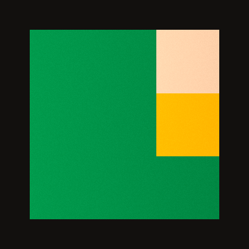
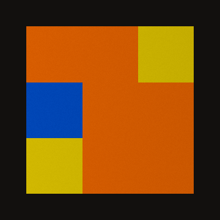
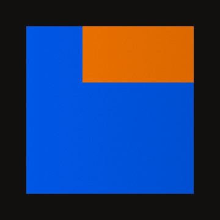
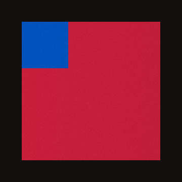
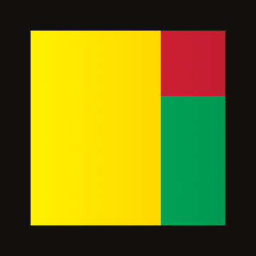
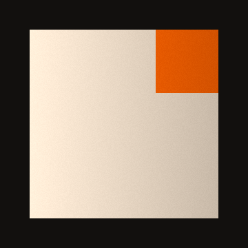
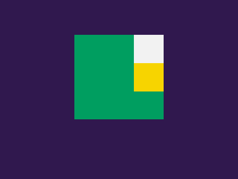

These are not camera photos. They are a legal Western 3×3 after the turns R, U, R', U' from solved, with yellow on top and green in front before those turns. Upload them in the scan, in this order. The top of each picture is the top of the cube in that photo. Do not turn a layer between them.






07-front-inset.png is the same front face, small, on a purple background. Use it instead of 01 on Face 1. The confirm button should stay disabled until the four corners sit on the coloured square. It is not a seventh face.
